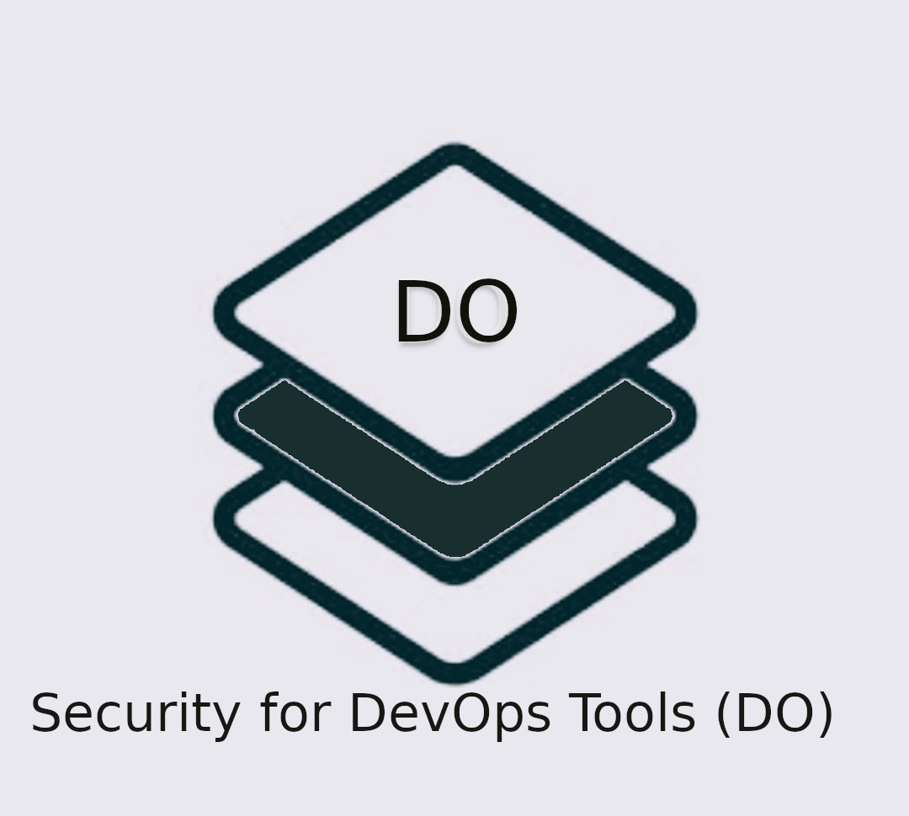

OSS Projects we track
We have identified a set of open source projects that we will be tracking and assessing their security posture as a community activity. This list will be a growing list where new projects gets added as we move forward.
Be-Secure Open Source Security Tech Stack and Be-Secure CE security assessment
We have defined a seven stage approach to assess and enhance the security posture of open source projects. Each stage is defined with a definitive objective and all together they will help strengthen the security posture of open source projects in a consistent manner.
Be-Secure open source security stack is a classification of technologies for enabling open-source developers to identify & leverage suitable BeSman environments that have been security tested by the Be-Secure open-source community.
The different open-source security tech stacks identified based on their characteristics and type of usage are –
|  | 
|
 | |
 |
OSS Projects we contribute
We have defined and developed a command line utility known as BeSman. We are contributing this utility to the community and will continue to help enhance its capabilities as we move on.